No Mercy is the first campaign in L4D which has 4 parts before you get to the finale. The finale takes place in the hospital rooftop while the survivors wait and defend the rooftop until rescue arrives which is a News 5 Helicopter.
1 / 5
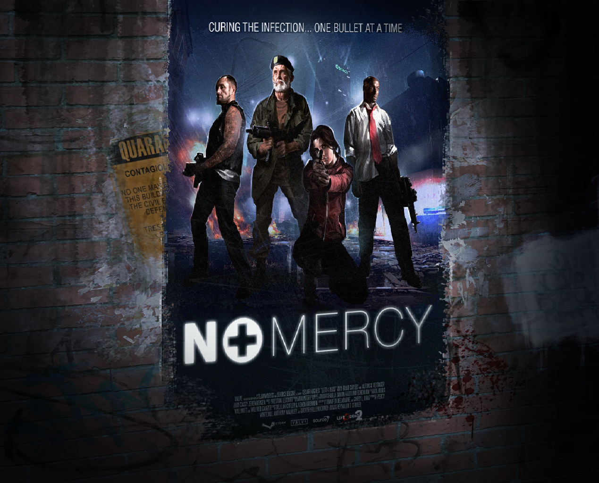
No Mercy Poster
❮
❯
Crash Course is a DLC campaign that takes place shortly after the events of the No Mercy campaign. Crash Course is the shortest campaign out all the other campaigns; containing only 2 parts (finale included). These 2 parts are The Alleyways and The Truck Depot Finale.
3 / 3
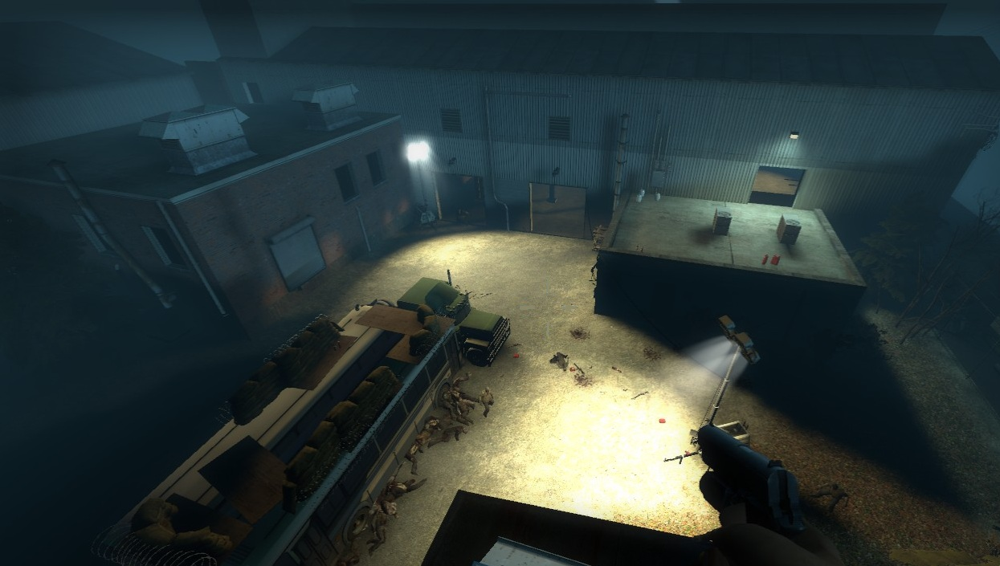
The Truck Depot Finale
❮
❯
Crash Course is a DLC campaign that takes place shortly after the events of the No Mercy campaign. Crash Course is the shortest campaign out all the other campaigns; containing only 2 parts (finale included). These 2 parts are The Alleyways and The Truck Depot Finale.
1 / 6
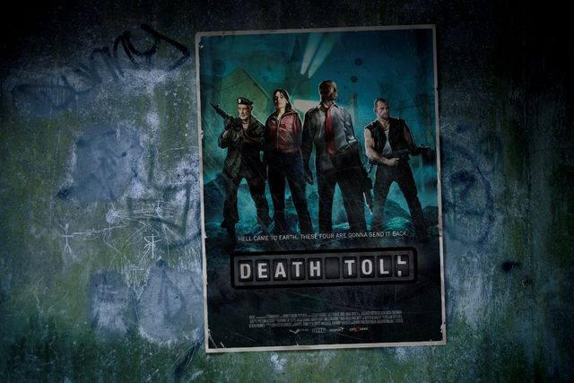
Death Toll Poster
6 / 6
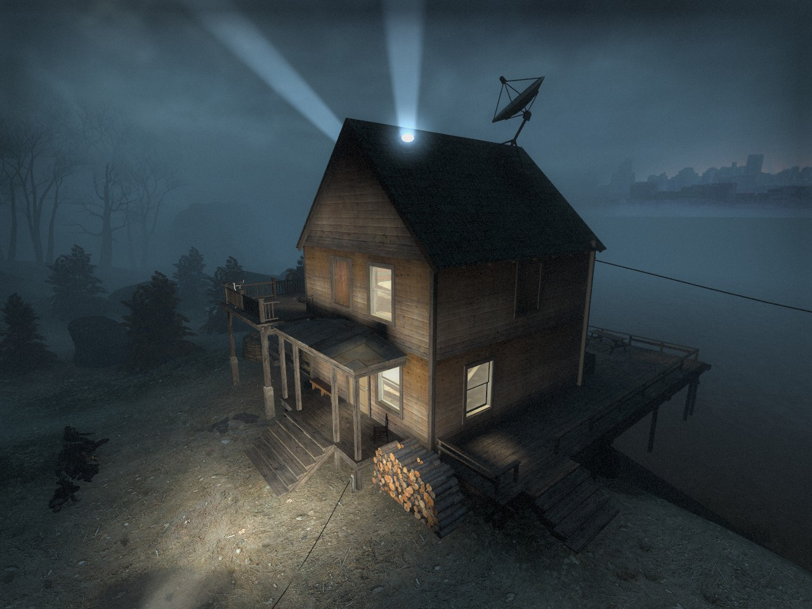
The Boathouse Finale
❮
❯
Crash Course is a DLC campaign that takes place shortly after the events of the No Mercy campaign. Crash Course is the shortest campaign out all the other campaigns; containing only 2 parts (finale included). These 2 parts are The Alleyways and The Truck Depot Finale.
1 / 6
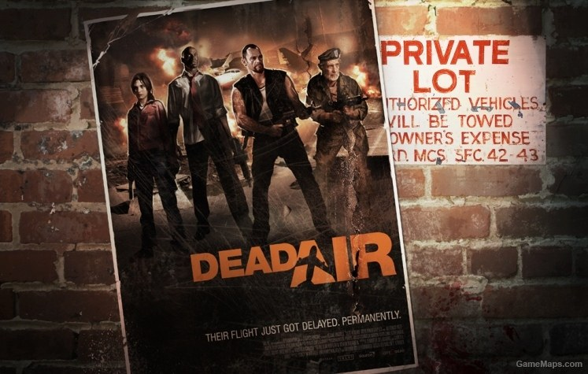
Dead Air Poster
2 / 6
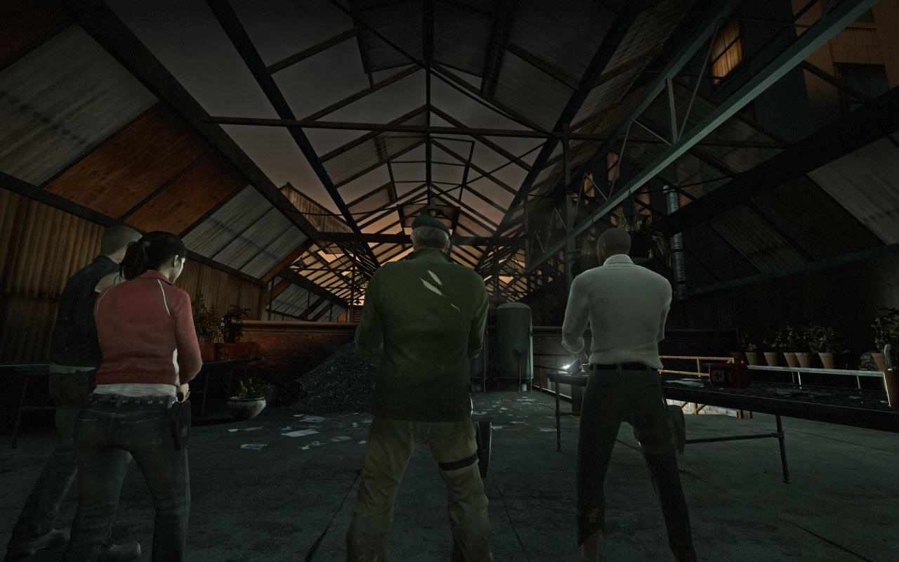
The Greenhouse
4 / 6
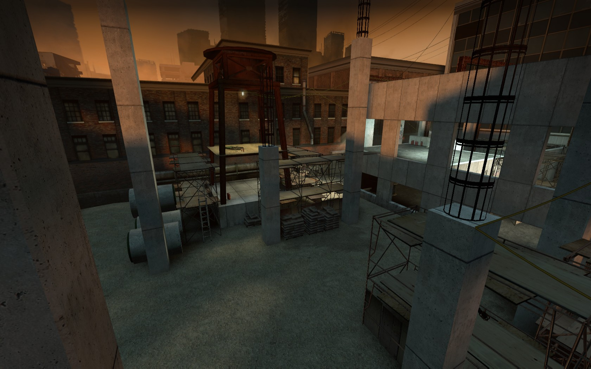
The Construction Site
6 / 6
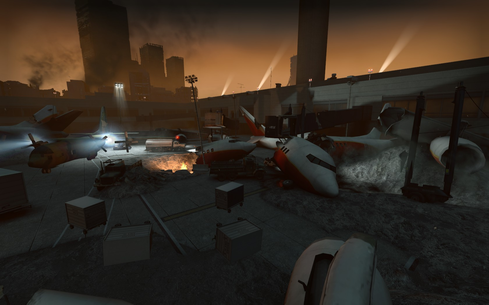
The Runway Finale
❮
❯
Crash Course is a DLC campaign that takes place shortly after the events of the No Mercy campaign. Crash Course is the shortest campaign out all the other campaigns; containing only 2 parts (finale included). These 2 parts are The Alleyways and The Truck Depot Finale.
1 / 6
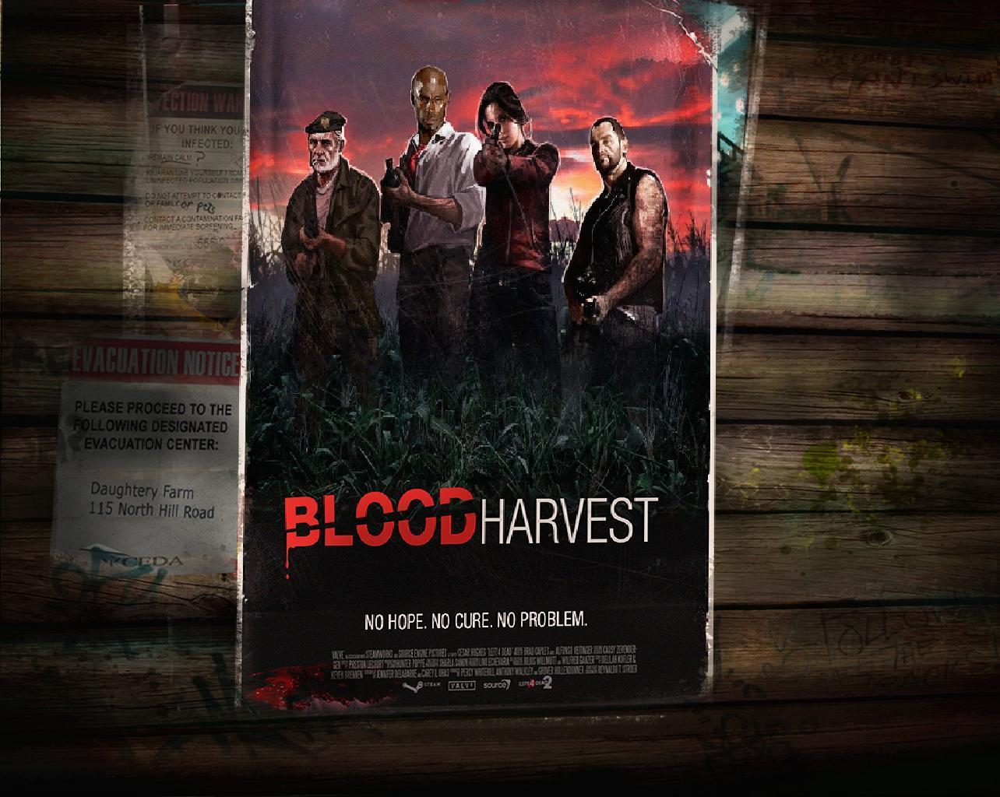
Blood Harvest Poster
5 / 6
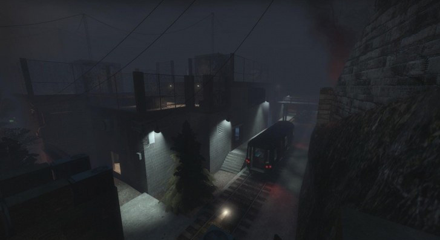
The Train Station
6 / 6
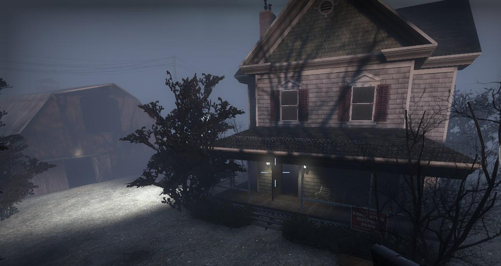
The Farmhouse Finale
❮
❯
Crash Course is a DLC campaign that takes place shortly after the events of the No Mercy campaign. Crash Course is the shortest campaign out all the other campaigns; containing only 2 parts (finale included). These 2 parts are The Alleyways and The Truck Depot Finale.
1 / 4
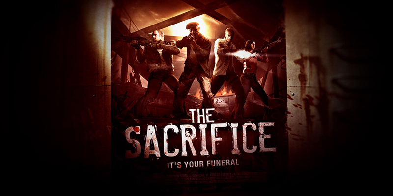
The Sacrifice Poster
4 / 4
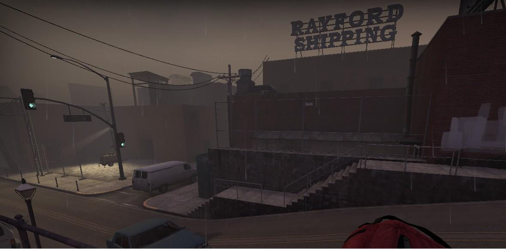
The Port Finale
❮
❯
Crash Course is a DLC campaign that takes place shortly after the events of the No Mercy campaign. Crash Course is the shortest campaign out all the other campaigns; containing only 2 parts (finale included). These 2 parts are The Alleyways and The Truck Depot Finale.
1 / 2
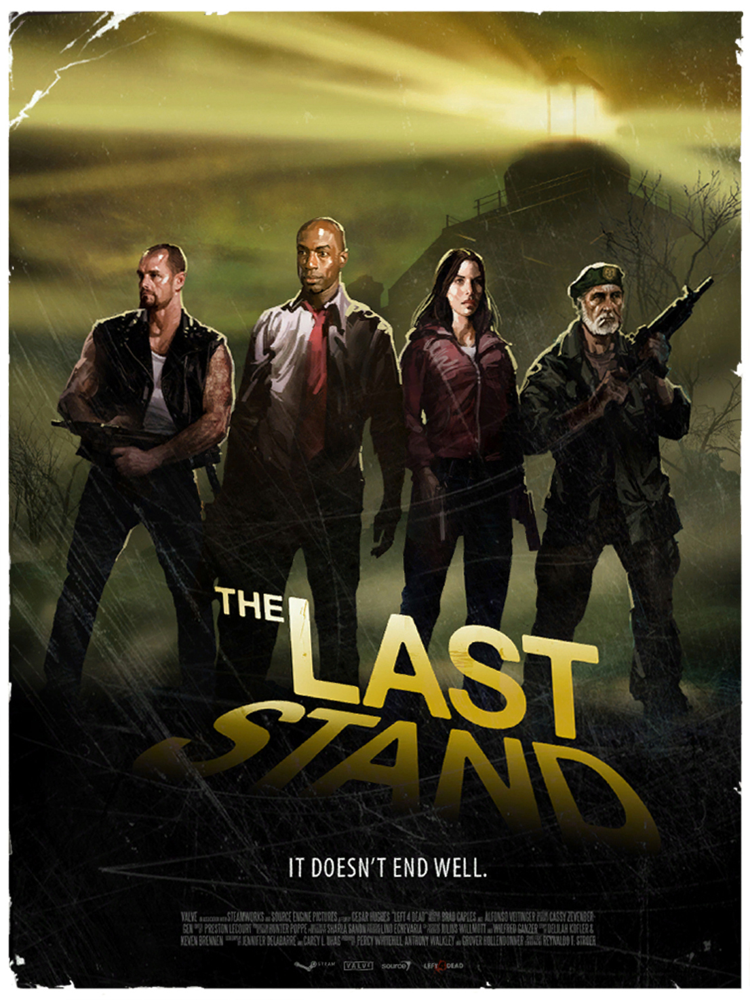
The Sacrifice Poster
2 / 2
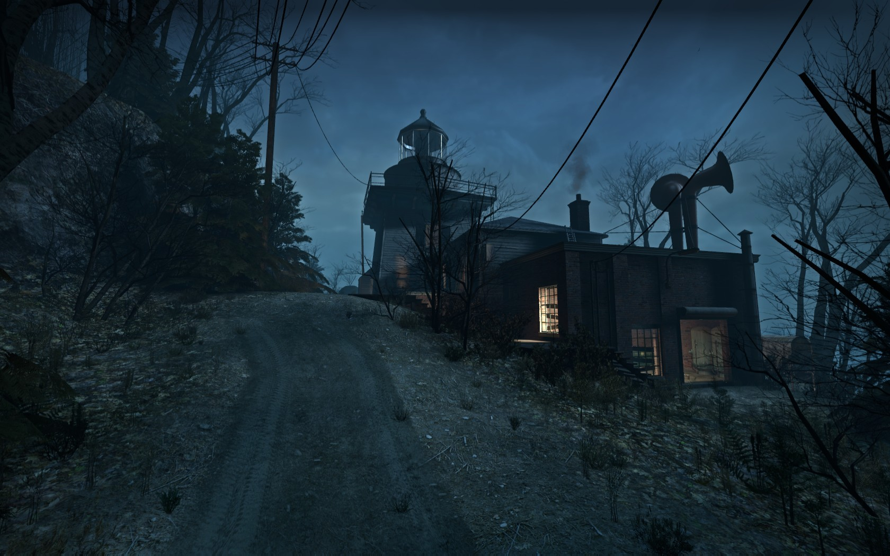
The Lighthouse
❮
❯